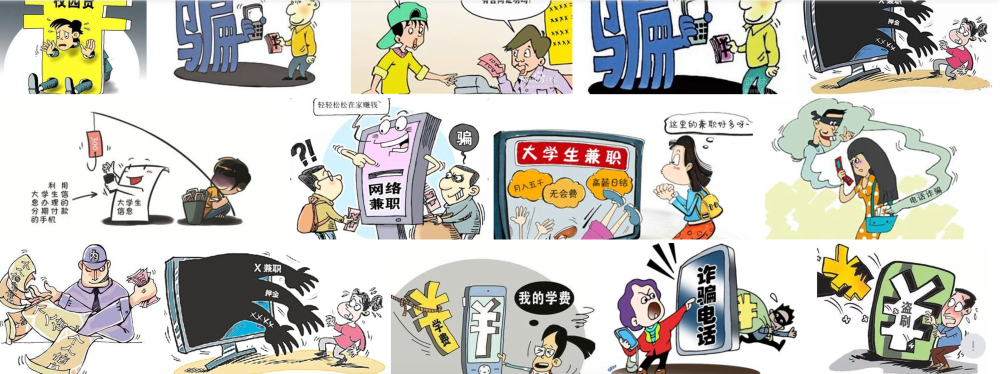
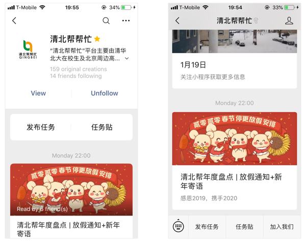
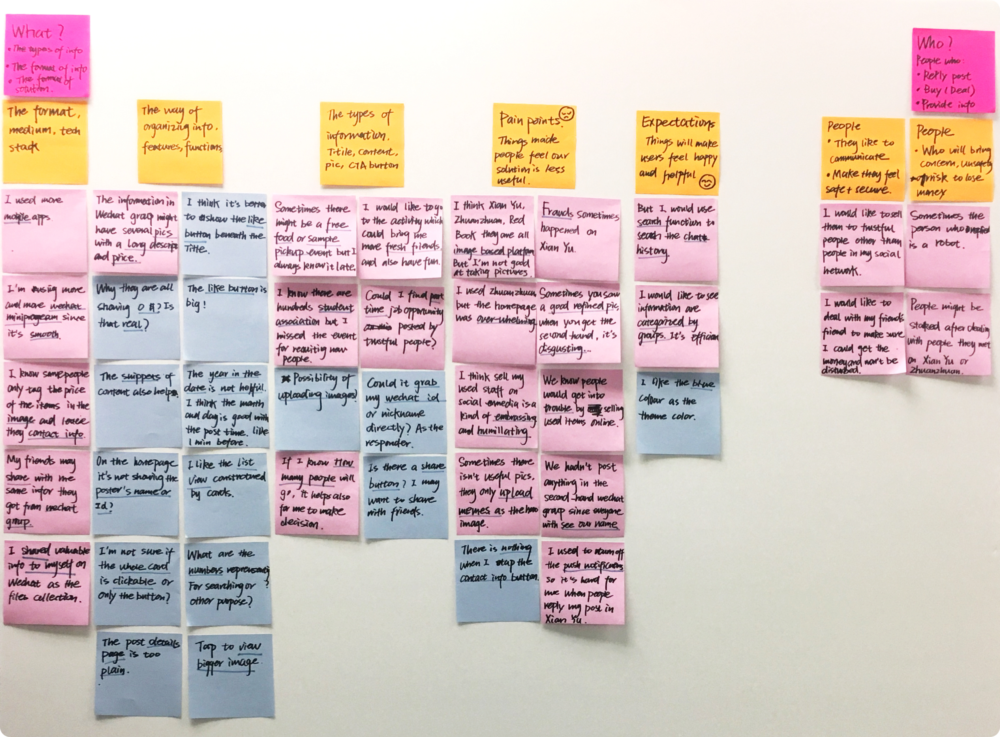
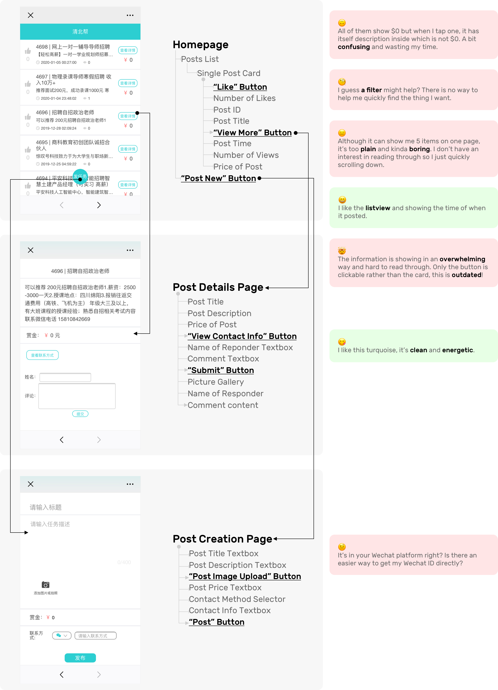
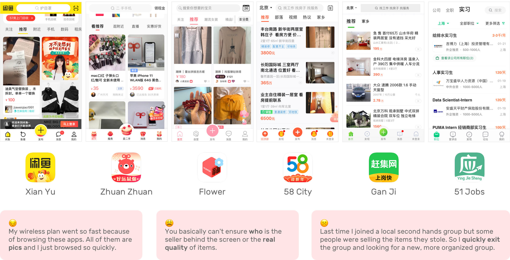
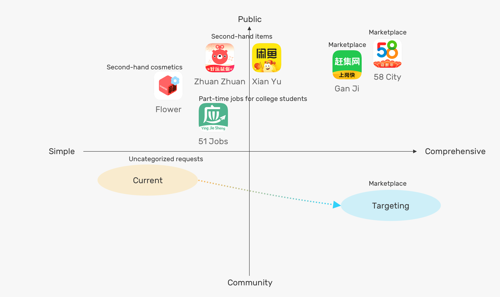
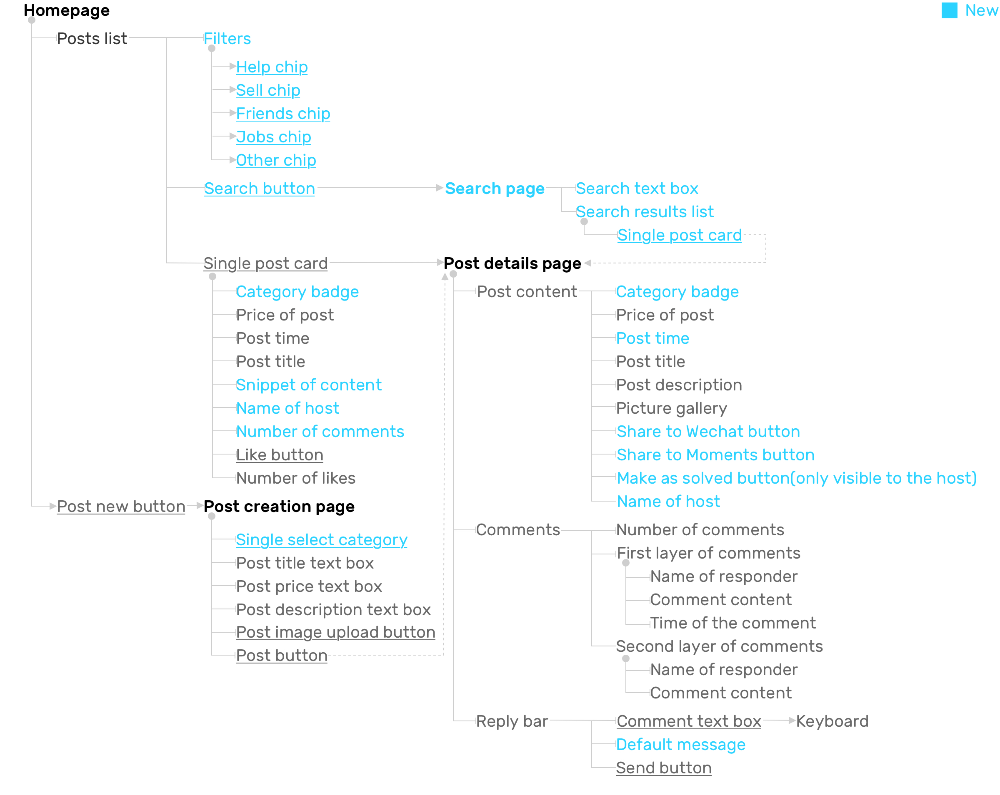

OVERVIEW
My Role
I worked as a Design Lead and the only designer in an R&D team to develop a WeChat Mini-Program product to better support the on-campus information exchanging for Chinese college students.
The Product THPK Marketplace Wechat Mini-Program has launched for two years and is continuously getting 1000 DAU.
Problems and Goal
After Facebook had been blocked and the copycat of Facebook, Renren.com, has bankrupted, there is no centralized social media for college students to exchange their social information with semi-strangers on campus. Event for WeChat, it only has a relatively closed social network that not supporting re-post other's posts directly. But extending social networks, as a validated social needs of younger generations, still exist but lack a channel to support.

Other than off-line social events and referrals, some activities still require college students to communicate and deal with strangers, but they are easily frauded, less sensitive to money, and more vulnerable and overwhelmed to un-verified information.
To build a community for colleges students and insiders, I designed a product that aimes to :
1. Support more accessible and trustworthy campus life information exchanging
2. Build an open community and help to upgrade communication to private after students id verification
3. Provide a simple, swift and responsive experience
We were targeting providing peer-to-peer campus life information services among the top 2 universities in China and owns over 40,000 users.
Solution
THPK-Bang is a Wechat Mini-Program based, mobile-end information service which is focusing on on-campus and off-campus information sharing,including:
problem sovling, second-hand selling and exchanging, dating and friends making, part-time job recruiting, topics sharing, activities and events,
for students who are studying at THU and PKU, the most famous universities in China which both located in the WU DAO KOU area in Beijing.
This is case, I'm going to only show the design process of
How I defined and designed for the dealing needs and scenarios
Quick Post
By showing 5 category badges on posts and as filters, you could easily get known about the mechanism of how posts are being organized and showed.
And when you are writing a new post, you can quickly tag your post with a category then post it quickly.
You could share your post with friends or chat groups via WeChat integration.
Find Posts
No matter by browsing the posts list, using filters or searching, you could easily locate the posts fit your interests.
Posters could verify their student id to get a school badge on their username. You can filter your search results by the id of the poster.
Notify Comments and Mark Post
By the integration in WeChat, you will be notified by our service platform's in-app message when there is an update on your post. So you don't need to keep looking at your post to track comments.
After solved, you could also mark it as a SOLVED status to get rid of unnecessary late inquiry.
EMPATHY
Value Propostion
An information exchange platform based on Wechat Mini Program and Wechat Public Platformfor college students in univeristy condensed area.
The core value of the company is connecting college students in the same area and providing supports for their daily life.
Current Stage
THPK-Bang was an Html 5 product embedded in THPK Bang Wechat service platform. User could post mission in H5 page and our operation staffs would record valuable post's tracking ID and centerlized them in daily Wechat article push. So other users could see high value posts and find them in H5 page by tracking ID.
 1. Accessibility of Wechat Ecology
In China, the most effctive communication platform and social media, other than Facebook or its copycat RenRen, is Wechat. The drawback is Wechat has relatively closed social circle so the individual's content is less possible to be seen by strangers.
2. College Students
Chasing for the lasteat model of electronics and cometics, looking for popular events and activities and seeking part time jobs, naive college students are facing overwhelming information and potential frauds when they are not protected by their families.
Research Findings
I led the user research by doing semi-structured interviews and interception at on-campus cafeterias, dining hall, student center, local grocery stores, and banks. We also recruited our platform followers for doing focus-group with sacrificial testing of the existing product to gather feedback.
| Affinity Mapping
User Groups
Posters
Information Providers who post
Needs:
1. Requesting helps
2. Exchanging or selling second-hands objects
3. Sharing recruiting or volunteering opportunites
4. Making new friends or dating
5. Finding and sharing on-campus events and popular topics
6. Sharing resources
 Respondents
Respondents
Information seekers who reply
Needs:
1. Finding an internship or par-time job
2. Willing to help when they have fit ability
3. Dating
4. Joining events
5. Having fun
6. Seeking resources
Pain Points
Problems of Current H5 Product
We've had a certain volume of daily users on the WeChat Public Platform, and as Wechat Mini Program using scenario is extending, our team realized that it has high adhesiveness, convenience and integration with Wechat makes it more suitable for providing service and building a brand image. So creating a Mini-Program Product would be better than a Native Mobile Application which means relative higher cost.
Problems of Competitors
There are some compelling competitors are providing services on second-hand and rental. But there are some problems need we to pay attention to:
1. Users' Unknown Identification
But they are not specifically focusing on college students who have less social experience on dealing with financial issues, screening and making agreements. This might brings the potential of fraud, advertisements, and third party agencies' involvement and disturbance.
2. Pictures Based Post
Most of the social media platforms are based on the images uploaded by the users to make the posts to be credible. At the same time, this strategy makes a product feel visually heavy with over load information.
DEFINE
Needs and Strategy
User Needs
1. Easy to Find Matched Posts
Strategy:
· Search funtion
· Categorize posts based on current posts data
· Provide different dimensions filters and shortcuts to help user match posts with their interests
2. Appropriate Notifications
Strategy:
· Notify posters new comments
· No unnecessary disturbance after the request has been solved
· Provide preset period of validity option when posting a mission
· Provide ending mission function
Operation Needs
1. Building a trustful university related community
Strategy:
· Show user's identification by a verification system
· Encourage to add pictures when posting
2. Keep the starting and shareable conversations here
Strategy:
· Encourage user interaction and reply in WeChat Mini-Program rather than in Wechat at the starting in touch stage
Competitive Landscape
Information Architecture
IDEATE
User Narrative
Poster
Heidi is a senior EE student who are going to graduate this Spring from Tsinghua University. Now she has already get a offer and start to work as a part time intern. So she is ready to relocated to her new apartment which is near Wangjing.
Respondent
Ryan is a RA student who has already got an graguate student addmission at Peking University EE department. He just rent an apartment near Wudaokou area.
Scenario
Heidi wants to sublet her off campus housing and to sell her books and some electronic appliances to trustful people on campus. Ryan wants to get a 3 months apartment sublet near Tsinghua University and some second hand item since he has spent too much money on housing.
Low-fi and User Flow
Use Case 1
Posting
· Make user categorize their needs
· Encourage to add pictures when posting
Use Case 2
Browsing, filtering and finding posts
· Show user's identification
· Show filters based on poster attributes, like gender, identidication
· Show quick filters based on Missions attributes, like category and posted time
· Make Missions list searchable
Use Case 3
Reading, sharing and replying a post
· Only show thumbnails in three by three layout to make users browsing comments quicker
· Make user could interactive no matter poster or other respondents quickly
Use Case 4
Tracking my post and receiving messages
· Prioritize the Posts entrance for easily tracking mission feedbacks and progress
· Mark new replies bold to make user check one by one
· Make user could go back to their missions quickly
Use Case 5
Marking post as solved
· Provide preset term of validity or ending mission function for users
Key Metrics
For the mini-program, since it ingrained inside Wechat, the key metrics are a bit different from native mobile apps.
Design Goal
1. Users see THPK Bang posts are useful and helpful
User Actions
Users open THPK Bang frequently
Metrics
DAU and source(Attribution), like Wechat articles, inside our service account, posts sharing, quick mini-program shortcut, interaction notifications
2. THPK Bang is recognized by more people
More first-time users open THPK Bang
Daily and monthly user growth rate
3. Users interact well in THPK Bang
Users comment in THPK Bang post during a certain period of time after posting
Daily and monthly retention rate and churn rate
DESIGN
Final Outcome
UI Design Guidelines
Keywords:
Swift, Easy to Use, Simple and Clean, Responsive, Various, Stable.
Figms Mockups
Reflections and Future
Now we have launched our product on the WeChat platform and had more than 1000 users to use every day. And our next step is to optimize the main function like issue mission, topic and activity and at the same time to fix some bugs which are critical for the user experience.